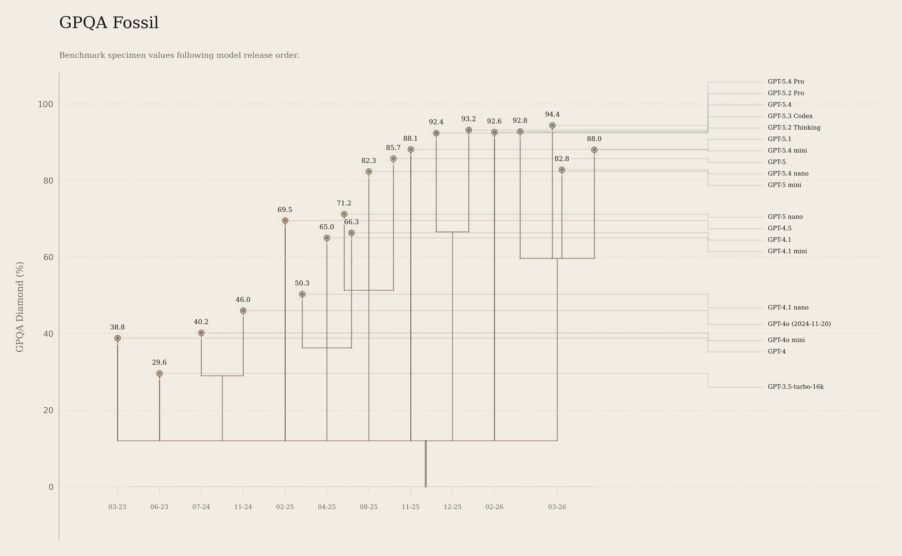

01 GPT-4
Mar 14, 2023
38.8
Few-shot CoT baseline from the original GPQA paper.

Measured record
Model names link to the release page, and the source column links to the page or paper where the GPQA Diamond value was published.
Model
Released
GPQA Diamond
Source
Record note
01 GPT-4
Mar 14, 2023
38.8
Few-shot CoT baseline from the original GPQA paper.
Jun 13, 2023
29.6
Few-shot CoT baseline from the original GPQA paper.
03 GPT-4o mini
Jul 18, 2024
40.2
Public GPQA Diamond score was published later in the GPT-4.1 appendix.
Nov 20, 2024
46.0
Evaluated as the GPT-4o(2024-11-20) snapshot in OpenAI's GPT-4.1 appendix.
05 GPT-4.5
Feb 27, 2025
69.5
The launch post reported GPQA (science) 71.4%; this page uses GPQA Diamond for cross-model consistency.
06 GPT-4.1 nano
Apr 14, 2025
50.3
OpenAI's first nano GPT model.
07 GPT-4.1 mini
Apr 14, 2025
65.0
Released with the GPT-4.1 API family.
08 GPT-4.1
Apr 14, 2025
66.3
Main GPT-4.1 release.
09 GPT-5 nano
Aug 7, 2025
71.2
Reported with reasoning effort high.
10 GPT-5 mini
Aug 7, 2025
82.3
Reported with reasoning effort high.
11 GPT-5
Aug 7, 2025
85.7
Reported with reasoning effort high.
12 GPT-5.1
Nov 13, 2025
88.1
Reported with reasoning effort high.
Dec 11, 2025
92.4
No tools; maximum available reasoning effort.
14 GPT-5.2 Pro
Dec 11, 2025
93.2
No tools; maximum available reasoning effort.
Feb 5, 2026
92.6
GPQA Diamond was published in the GPT-5.4 comparison table.
16 GPT-5.4
Mar 5, 2026
92.8
Reported at reasoning effort xhigh.
17 GPT-5.4 Pro
Mar 5, 2026
94.4
Highest public OpenAI GPT-family GPQA Diamond score in this record.
18 GPT-5.4 mini
Mar 17, 2026
88.0
Reported at reasoning effort xhigh.
19 GPT-5.4 nano
Mar 17, 2026
82.8
Reported at reasoning effort xhigh.